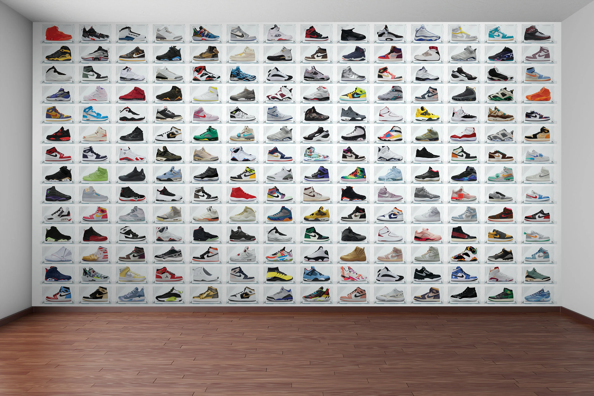
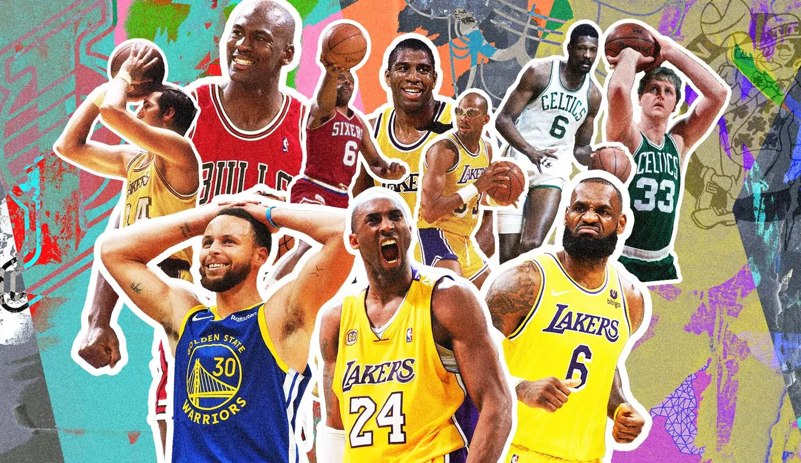
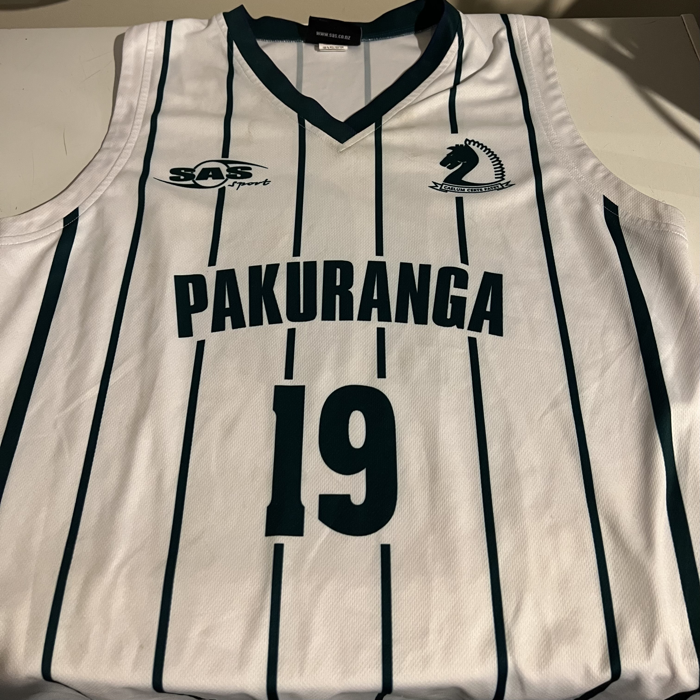

Basketball culture and lifestyle

Basketball culture extends far beyond the court. It's a lifestyle that shapes fashion, music, and storytelling. From iconic sneakers like the Air Jordans and Nike LeBrons , to acclaimed documentaries such as The Last Dance and Hoop Dreams that dive deep into the game’s history and personal stories, basketball influences global culture in unforgettable ways. Films like Space Jam and Coach Carter showcase the sport’s impact on entertainment, while the culture around basketball continues to inspire fans and players alike with its energy and creativity.Major Leagues
 Basketball is played and celebrated worldwide, with major leagues showcasing top talent and
thrilling fans around the world. The NBA or the National Basketball Association in the United States
is the most popular league, known for its global superstars and high-level play. In Europe, leagues
like the EuroLeague bring together the best teams from countries like Spain, Turkey, and Russia.
Meanwhile, the Chinese Basketball Association has grown rapidly, attracting both local stars and
international players. Other growing leagues include Australia’s NBL and the Liga ACB in Spain, each
contributing to basketball’s expanding global footprint and passionate fanbase.
Basketball is played and celebrated worldwide, with major leagues showcasing top talent and
thrilling fans around the world. The NBA or the National Basketball Association in the United States
is the most popular league, known for its global superstars and high-level play. In Europe, leagues
like the EuroLeague bring together the best teams from countries like Spain, Turkey, and Russia.
Meanwhile, the Chinese Basketball Association has grown rapidly, attracting both local stars and
international players. Other growing leagues include Australia’s NBL and the Liga ACB in Spain, each
contributing to basketball’s expanding global footprint and passionate fanbase.
Famous Players

When it comes to legendary basketball players, a few people come to mind. Like Michael Jordan, who is the responsible for the Air Jordan shoe, changing the game with his competitive spirit and amazing skill. Then you have Lebron James who is argued to be the modern day 'GOAT' against Michael Jordan and known for his overall greatness. Other players like Kobe Bryant inspired the basketball community with passion, determination, and iconic moments, and Shaquille O'Neal, who dominated the league with ground-shaking power and strength. Players like Stephen Curry forever changed the way the game is played with his lights-out shooting from the three point line. You can't forget the international stars like Dirk Nowitzki and Giannis Antetokounmpo bringing new styles into the game. These players, past and present, left huge marks on the game and continue to inspire fans everywhere.
My experiences

I started playing basketball mid-way through year 7. I realised I was pretty good at dribbling as I used to try dribbling a ball when I was younger but never stuck with it. Soon I found a sport I was passionate about and started to play with my mates more. I joined a club team in year 8 since I couldn't make one in school. I led my team to a championship winning a medal. During my college year 9 days I made the C team for school. I then realised I was on the shorter side than most players. But nevertheless I kept playing and getting better. Then in year 10, I made the junior A team. Now in the present day, I continue to play the sport and get better, working towards my goals and achieving great things.